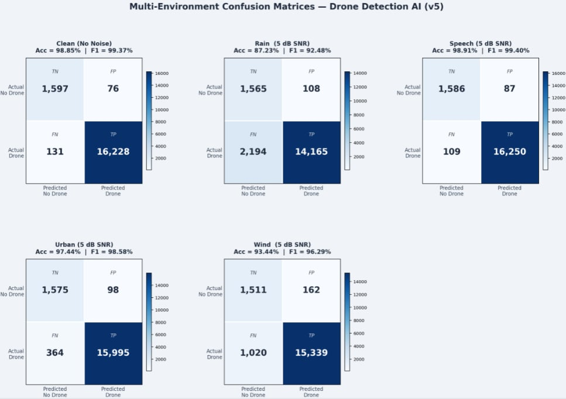

ณัฐพล
ธารอุดมลาภ
นักศึกษาวิทยาการคอมพิวเตอร์
ผมมีความสนใจด้าน AI, Data Analytics และ Web Development โดยกำลังพัฒนาทักษะด้าน Python, SQL และการพัฒนาเว็บไซต์ผ่านการเรียนและการทำโปรเจกต์ต่าง ๆ เป้าหมายของผมคือการได้เรียนรู้จากการทำงานจริงและนำความรู้ที่มีไปประยุกต์ใช้ในการพัฒนาระบบและแก้ปัญหา
01 / ABOUT
// about me
รู้จักผม
ให้มากขึ้น
ผมเป็นนักศึกษาวิทยาการคอมพิวเตอร์ ชั้นปีที่ 4 มีความสนใจด้าน AI, Data Analytics และ Web Development ปัจจุบันกำลังพัฒนาทักษะด้าน Python, SQL และการพัฒนาเว็บไซต์ รวมถึงเรียนรู้การนำเทคโนโลยีมาใช้ในการแก้ปัญหาผ่านการทำโปรเจกต์ต่าง ๆ ผมเชื่อว่าการเรียนรู้จากการทำงานจริงจะช่วยให้เข้าใจกระบวนการทำงาน การแก้ปัญหา และการประยุกต์ใช้ความรู้ได้มากกว่าการเรียนในห้องเรียนเพียงอย่างเดียว จึงมีเป้าหมายที่จะเข้าฝึกงานเพื่อพัฒนาทักษะ เรียนรู้จากผู้มีประสบการณ์ และเตรียมความพร้อมสำหรับการทำงานในอนาคต
มหาวิทยาลัยBangkok University
คณะ / สาขาวิทยาการคอมพิวเตอร์
ชั้นปีชั้นปีที่ 4
สายงานที่สนใจData Analytics, AI, Web Development
02 / SKILLS
// skills & tools
ทักษะและเครื่องมือ
[แก้ไขรายการด้านล่างให้ตรงกับทักษะที่ใช้งานจริง]
Web Development
AI & Data
Tools & Database
03 / PROJECTS
// selected work
ผลงาน

SkyWarden — Drone Audio Detection
พัฒนาระบบ AI สำหรับตรวจจับเสียงโดรนแบบ Real-time จากสัญญาณไมโครโฟน โดยใช้เทคนิค Audio Processing และ CRNN เพื่อจำแนกเสียงโดรนจากสภาพแวดล้อมที่มีเสียงรบกวน เช่น ลม ฝน เมือง และเสียงพูด

Be Lune Library Management System
พัฒนาระบบจัดการห้องสมุดสำหรับบรรณารักษ์ รองรับการเข้าสู่ระบบ การจัดการข้อมูลหนังสือ สมาชิก และการยืม-คืนหนังสือ พร้อมเชื่อมต่อฐานข้อมูล SQLite เพื่อจัดเก็บข้อมูลและใช้งานภายในระบบ

AI Resume Screening System
พัฒนาระบบ AI สำหรับวิเคราะห์ Resume และจับคู่กับ Job Description โดยใช้เทคนิค Natural Language Processing (NLP) และ Machine Learning เพื่อช่วยประเมินความเหมาะสมของผู้สมัครและแสดงผลการวิเคราะห์เบื้องต้น
04 / CERTIFICATES
// learning evidence
Certificates
 01
01
Software Development with ChatGPT: Generating Code with AI
Coursera · 2025
ดูใบรับรอง ↗ 02
02
Official Practice Exam: AWS Certified Cloud Practitioner (CLF-C02)
AWS Training & Certification · 2026
ดูใบรับรอง ↗ 03
03
Cybersecurity Fundamentals
NCSA · 2025
ดูใบรับรอง ↗ 04
04
Microsoft 365 Copilot
TDGA × Microsoft × NCSA · 2025
ดูใบรับรอง ↗// GET IN TOUCH